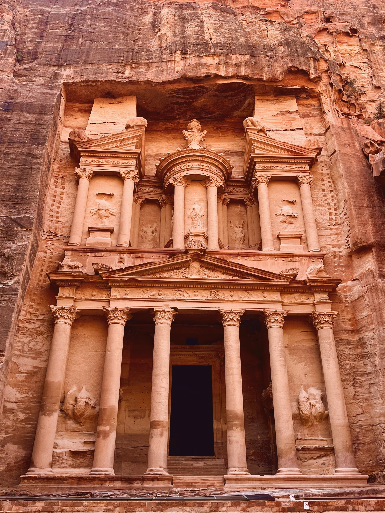
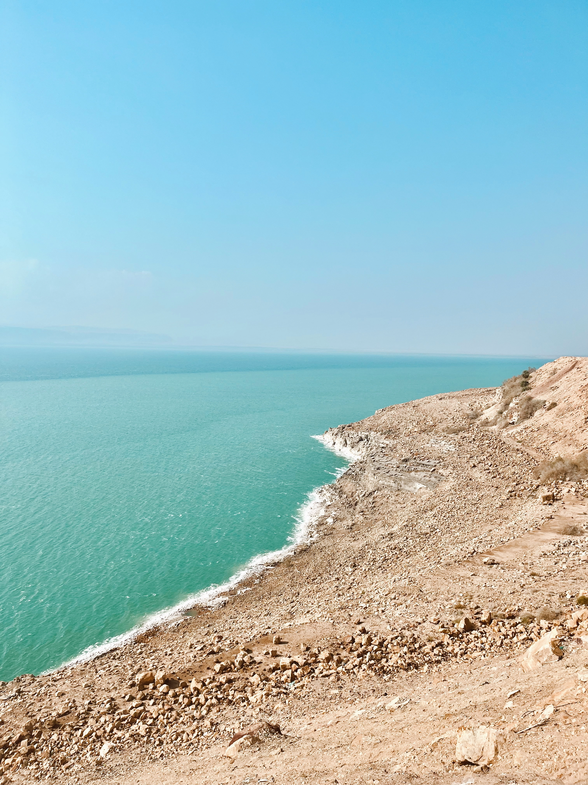
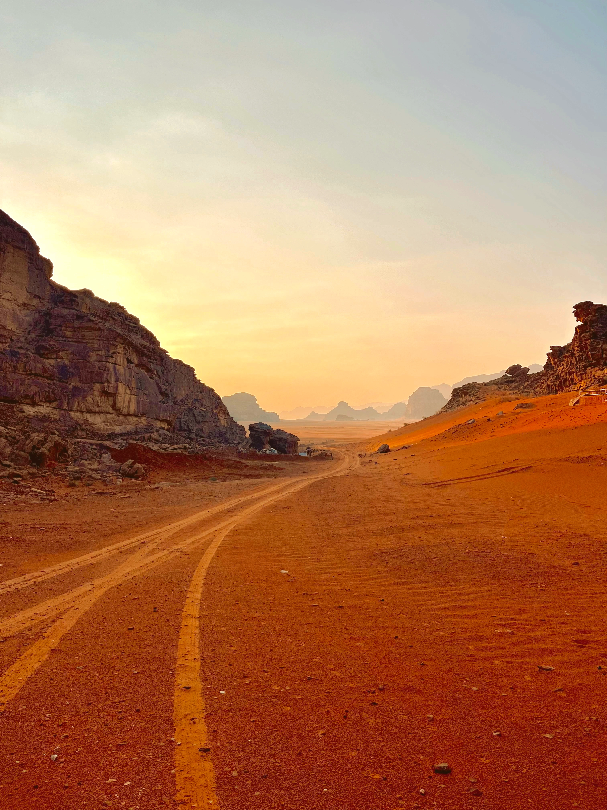
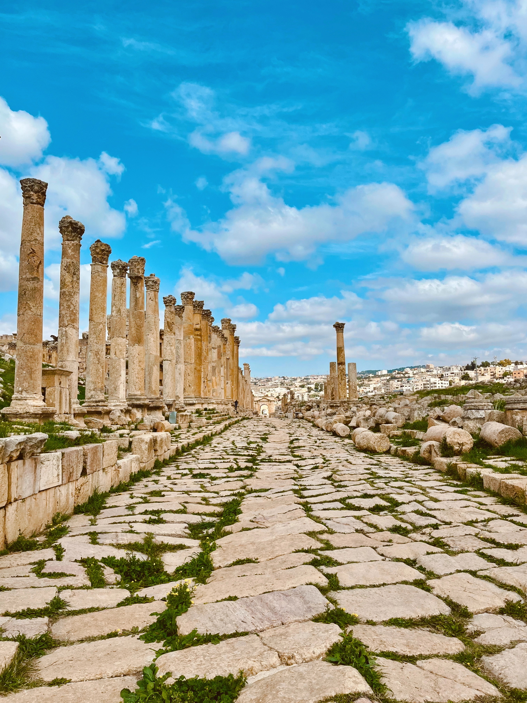
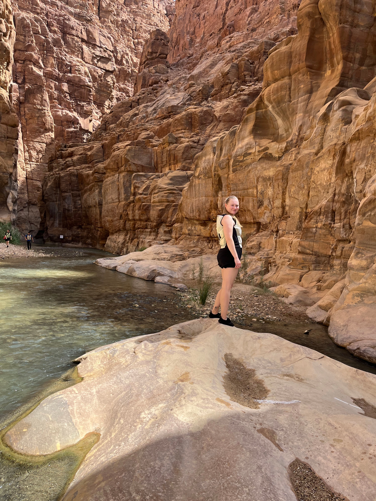
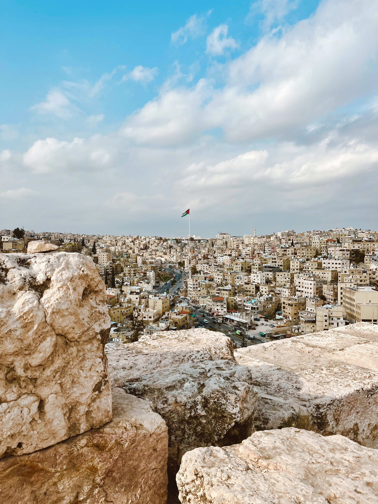
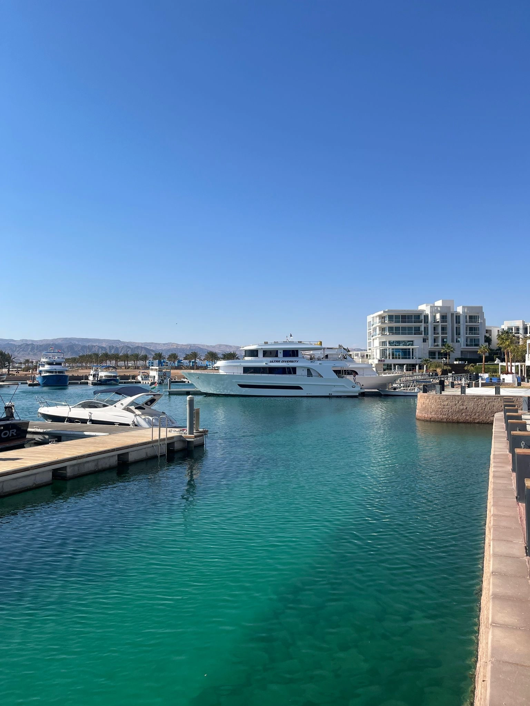

Tässä on muutamia niistä monista Jordanian upeista paikoista.

UNESCOYksi maailman seitsemästä uudesta ihmeestä. Nabatealaisten vuoristosta kallioon hakattu kaupunki on Jordanian kruununjalokivi. Treasury (Al-Khazneh) on unohtumaton näky.

Luonto430 metriä merenpinnan alapuolella - maailman alin piste. Suolapitoisuus on kymmenkertainen valtamereen verrattuna, joten kelluminen on pakollinen kokemus!

LuontoHiljaisuus, punainen hiekka ja kalliot jotka tuntuvat maailman reunalta. Wadi Rum on paikka jossa aika pysähtyy. Päivällä aavikkoon jeepilla tai kamelin selässä, yöksi beduiinileirille tähtitaivaan alle.

HistoriaValtavat pylväskadut, amfiteatteri ja riemukaaret vievät ajatukset 2000 vuotta taaksepäin. Yksi maailman parhaiten säilyneistä roomalaiskaupungeista Italian ulkopuolella - ja silti monelle täysin tuntematon.

SeikkailuMaailman alin luonnonsuojelualue. Syvien kanjonien läpi virtaavat joet ja vesiputoukset tekevät Wadi Mujibista unohtumattoman kohteen vaeltajille ja seikkailunhaluisille.

Kaupunki19 kukkulalle rakennettu elävä metropoli yhdistää muinaisen ja modernin. Sitadelli, roomalainen teatteri ja Rainbow Street ovat must-see -kohteita.
Raamatun mukaan Mooses näki Luvatun maan tältä vuorelta. Huikeita näkymiä Palestiinan suuntaan, Jordanjoelle ja kirkkaina päivinä jopa Jerusalemiin.
1100-luvulla rakennettu massiivinen ristiretkeläisten linna hallitsee Jordanian ylätasankoa. Historianystävälle ehdoton vierailu jykevän arkkitehtuurin ja huikeiden näkymien äärellä.

RantalomaJordanian ainoa merikaupunki tarjoaa upean snorklauksen ja sukelluksen koralliriutoilla. Maailmanluokan vedenalainen elämä läpi vuoden.
1100-luvun arabialainen linna vihreällä mäenharjulla pohjois-Jordaniassa. Rakennettu puolustamaan ristiretkeläisiltä - nykyään tarjoaa upeat näkymät ympäröiviin laaksoihin ja mäntymetsiin.
Bysanttilainen kaupunki, joka tunnetaan upeista lattiamosaikeistaan. Pyhän Yrjön kirkossa on kuuluisa 6. vuosisadan mosaiikkikartta Pyhästä maasta.